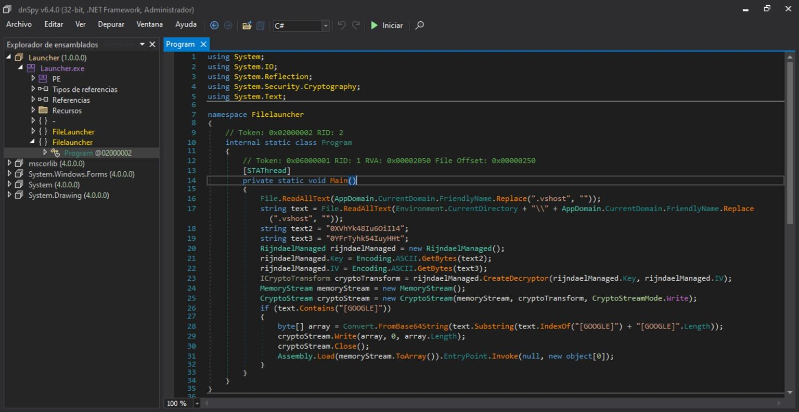
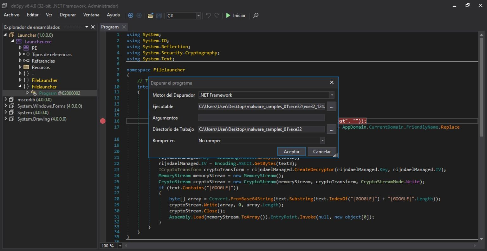
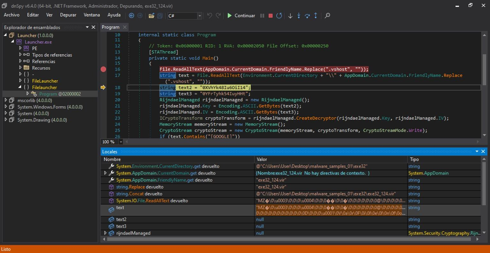
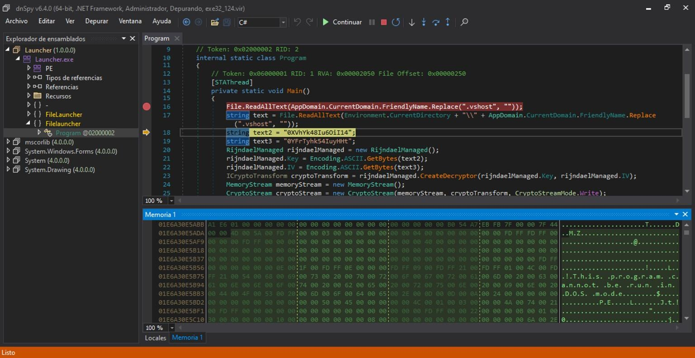
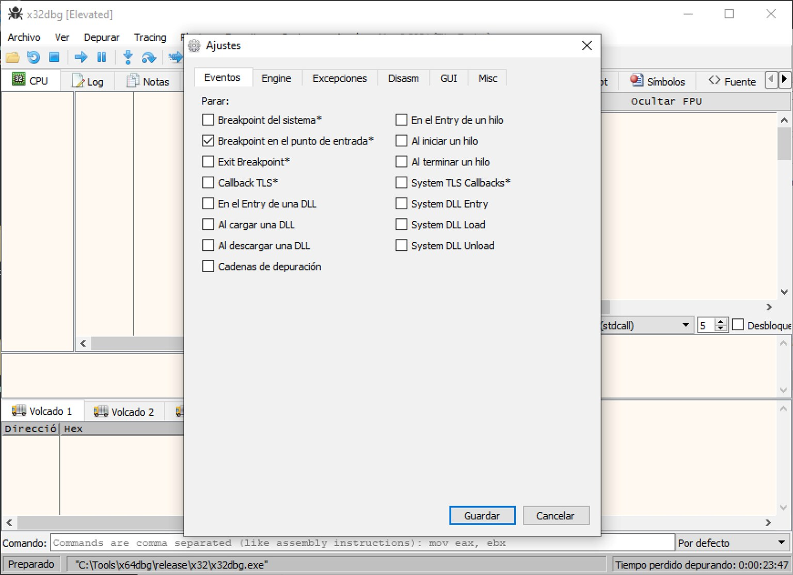
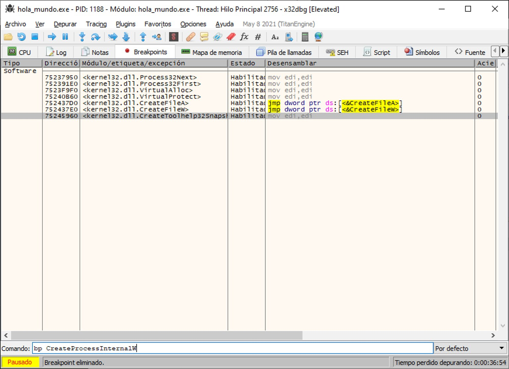

Análisis dinámico avanzado en Windows
El análisis dinámico del módulo 11 observa la muestra "desde fuera": qué ficheros toca, qué claves de registro modifica, a qué dominios intenta conectarse. El análisis dinámico avanzado va un paso más allá y mira "desde dentro", ejecutando el binario bajo el control de un depurador (debugger) que permite pausar el programa en cualquier instrucción, inspeccionar sus variables y examinar la memoria del proceso mientras el malware está cargado y, si estaba empaquetado, ya desempaquetado.
1 Depuradores: nivel fuente y bajo nivel
El análisis dinámico avanzado se basa fundamentalmente en la ejecución del binario sospechoso mediante un depurador. Un depurador permite ejecutar el programa de forma controlada: establecer puntos de parada o breakpoints, ejecutar instrucciones paso a paso y realizar el seguimiento de variables, entre otras posibilidades. Hay dos grandes tipos:
Debuggers de nivel fuente
Permiten depurar sobre el código fuente en el que fue programado el malware, generalmente reconstruido por decompilación (por ejemplo, C#/.NET o Java).
Debuggers de bajo nivel
Permiten depurar directamente sobre el código máquina del binario, mostrando su desensamblado.
Al ser herramientas de análisis dinámico, los depuradores sí permiten examinar regiones de memoria, analizar el malware una vez desempaquetado y llevar a cabo análisis de comportamiento —justo lo que el análisis estático avanzado del módulo 12 no puede hacer.
2 Herramientas de análisis dinámico avanzado
La herramienta adecuada depende, de nuevo, del tipo de binario:
dnSpy
Debugger de nivel fuente para ejecutables .NET Framework, .NET Core y Unity. Combina decompilación y depuración en una sola herramienta.
x32dbg / x64dbg
Debugger de bajo nivel, open source, para arquitectura x86. Sustituto directo del veterano OllyDbg.
WinDbg
Depurador de bajo nivel de Microsoft, ampliamente usado también para depuración de controladores (drivers) y análisis de volcados de memoria del sistema.
3 dnSpy: del código decompilado al primer breakpoint
dnSpy es, a la vez, decompilador y depurador para ejecutables .NET: internamente se apoya en el motor de decompilación ILSpy y en el compilador Roslyn de C#/Visual Basic. Existen versiones de 32 bits (dnSpy-x86) y de 64 bits (dnSpy), que hay que elegir según la arquitectura del binario a analizar —el mismo criterio del módulo 7.
Tras abrir el fichero (Archivo > Abrir…), dnSpy lo decompila automáticamente. Localizando el punto de entrada del programa —el equivalente, para un ensamblado .NET, al entry point del PE visto en el módulo 9— se llega directamente al código que se ejecutará primero:

Sobre ese código decompilado se pueden insertar breakpoints haciendo clic en el margen izquierdo de la línea deseada, exactamente igual que en un IDE de desarrollo convencional.
4 dnSpy: depuración en directo
Con los breakpoints colocados, Depurar > Iniciar abre el cuadro de configuración de la depuración: motor del depurador, ruta del ejecutable, argumentos, directorio de trabajo y en qué condición debe "romper" la ejecución.

Al ejecutar, el programa se detiene automáticamente en el primer breakpoint alcanzado. Desde ahí, los controles de ejecución (continuar, paso a paso, paso adentro/afuera de una función) permiten avanzar instrucción a instrucción, mientras el panel Locales muestra el valor real que van tomando las variables del programa en cada momento —variables que, unas líneas antes, aparecían vacías (null):

Para datos más grandes —arrays de bytes, cadenas largas—, dnSpy también permite abrir su contenido en una ventana de memoria dedicada, con vista hexadecimal y en texto:

Ese contenido se puede además volcar a un fichero desde el propio menú contextual de la ventana de memoria. El fichero volcado —el payload real que estaba oculto tras el descifrado— ya se puede analizar con las técnicas estáticas del módulo 10 y del módulo 12, cerrando el ciclo completo de análisis: estático → dinámico → estático de nuevo sobre lo que el dinámico dejó al descubierto.
5 x32dbg/x64dbg: configuración e interfaz
Para binarios nativos (no .NET), la depuración se hace a bajo nivel, directamente sobre ensamblador. x32dbg (y su equivalente de 64 bits, x64dbg) es un depurador open source para x86 que ha sustituido al histórico OllyDbg. Antes de empezar, conviene revisar sus opciones en Opciones > Preferencias: por ejemplo, la pestaña "Eventos" incluye la casilla "Breakpoint en el punto de entrada", que detiene automáticamente la ejecución justo al llegar al entry point del programa, sin necesidad de colocar un breakpoint manual primero.

La interfaz de x32dbg reúne, en una sola ventana, el desensamblado de la muestra, los registros de la CPU (módulo 7), volcados de memoria, la pila y una barra de comandos: prácticamente el mismo tipo de información que dnSpy ofrecía para .NET, pero a nivel de instrucciones de máquina en lugar de código fuente reconstruido.
6 x32dbg: breakpoints sobre funciones de la API
Una de las formas más productivas de depurar malware es colocar breakpoints directamente sobre funciones de la API de Windows especialmente reveladoras —justo las del apéndice de referencia—, en lugar de sobre líneas concretas del código del programa. Basta con escribir en la barra de comandos, por ejemplo, bp CreateProcessInternalW, o añadirlas desde la pestaña "Breakpoints":

7 Cómo encaja este bloque con el análisis de malware
El análisis dinámico avanzado cierra el recorrido técnico de este curso: donde el análisis dinámico básico del módulo 11 observaba el comportamiento de la muestra desde fuera, un depurador permite entrar en el propio proceso mientras corre, leer sus variables en el instante exacto en que un valor se descifra, y confirmar —función por función— las hipótesis que el análisis estático había planteado. Ningún análisis de malware serio se apoya en una sola técnica: la combinación de análisis estático básico y avanzado con análisis dinámico básico y avanzado es lo que permite pasar de "esto parece sospechoso" a entender, con precisión, qué hace realmente una muestra y cómo lo hace.